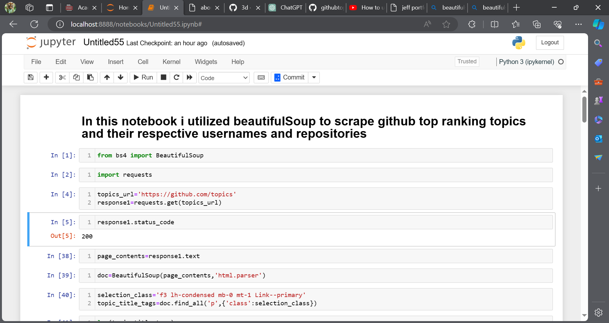
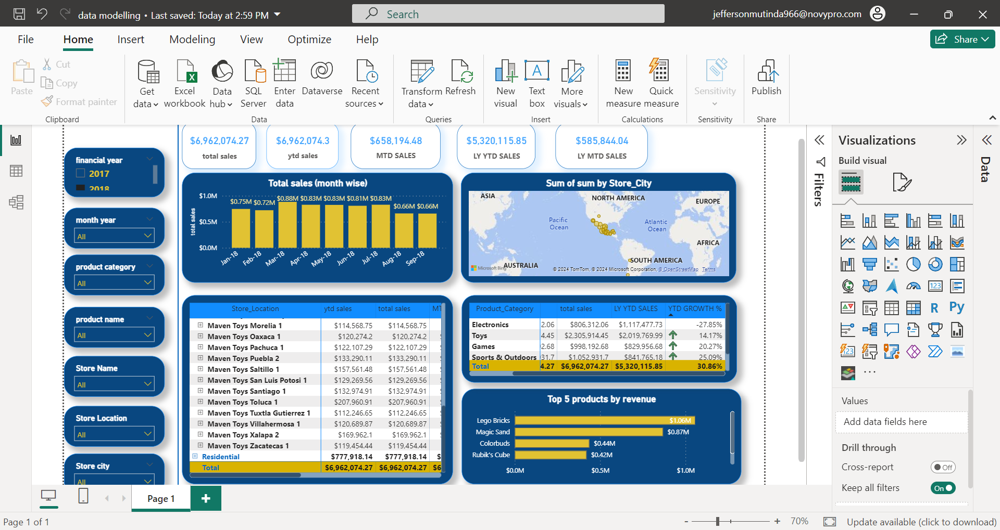
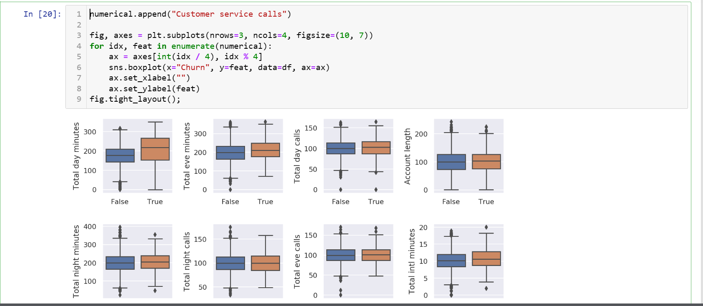
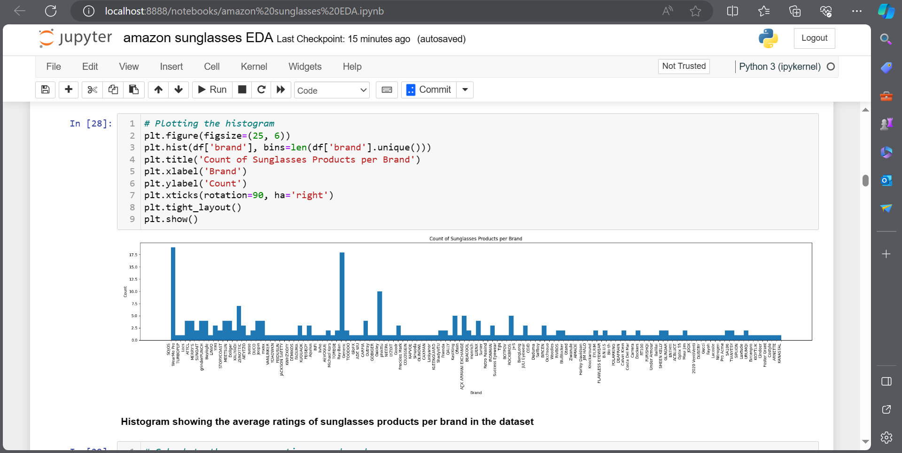

April 25, 2022
I have showcased my exceptional skills and knowledge through a series of remarkable projects.
Each project demonstrates my proficiency in various domains, including web scraping, data analysis, dashboards and visualization.
Explore my portfolio to witness firsthand the depth of my expertise and the quality of my work.
.jpg)
For a recent project, I utilized Scrapy to scrape data from a complex website, leveraging its robust features such as built-in selectors, asynchronous requests, and request scheduling.
To ensure data integrity and quality, I implemented custom pipelines within Scrapy to perform data cleaning, validation, and transformation tasks. This streamlined the extraction process and enhanced the reliability of the scraped data.
Furthermore, I incorporated middleware into the Scrapy framework to implement proxy rotation, effectively circumventing IP blocking and enhancing anonymity during scraping activities. By dynamically rotating proxies, I ensured consistent access to the target website while maintaining compliance with scraping policies.

One of my notable projects involved leveraging Beautiful Soup, a Python library for web scraping, to extract top-ranking topics on GitHub.
By analyzing GitHub's trending page, I wrote a Python script to scrape the HTML content and extract relevant information such as repository names, descriptions, stars, and contributors.
Beautiful Soup's intuitive API allowed me to navigate through the HTML structure effortlessly and extract the desired data efficiently.
The project enabled me to gain valuable insights into trending topics and technologies in the GitHub community, providing valuable information for staying updated with the latest trends in software development.

One of my key projects involved developing an automated testing framework using Selenium and Java to streamline website testing processes.
Utilizing Selenium WebDriver, I designed a robust automation suite capable of interacting with web elements, navigating through pages, and executing various test scenarios.

As part of my data analysis projects, I developed a comprehensive Power BI dashboard focusing on road accidents. This dashboard provides a visual representation of accident data, allowing stakeholders to gain insights into factors contributing to road accidents, such as location, time, weather conditions, and severity.
The dashboard features interactive visualizations, including maps, charts, and graphs, enabling users to explore the data dynamically. By leveraging Power BI's capabilities, I was able to create an intuitive and user-friendly interface that facilitates data-driven decision-making for road safety initiatives.

The dashboard provides valuable insights into key performance metrics such as revenue, sales trends, product profitability, and customer behavior.
By visualizing data from various store locations, product categories, and customer segments, the dashboard enables stakeholders to make informed decisions to optimize sales strategies, inventory management, and marketing campaigns.

The dataset contained information on housing data in the Nashville, TN area. I used SQL Server to clean the data to make it easier to use. For example, I converted some dates to remove unnecessary timestamps; I populated data for null values; I changed address columns from containing all of the address, city and state into separate columns; I changed a column that had different representations of the same data into consistent usage; I removed duplicate rows; and I deleted unused columns.

Performed data visualization from simple distributions to dimensionality reduction project focusing on customer churn for telecon operator.

Perfomed Explaratory Data Analysis on Amazon sunglasses sales data utilizing Python programming.